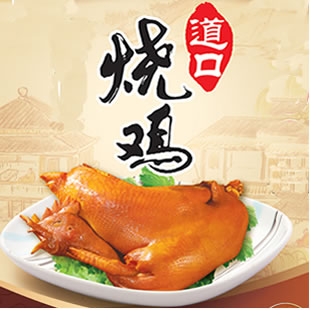

安阳市滑县的道口镇是全国闻名的烧鸡之乡。道口烧鸡由道口镇义兴张烧鸡店所产，是河南名特产食品之一。其造型、色泽、味道、软烂被誉为四绝，冷食或热食均回味无穷。道口烧鸡创始于清顺治十八年(1661)，距今已有300余年历史。清乾隆五十二年(1787)，现在的烧鸡大师张存友的先祖张炳，偶遇曾在清宫御膳房作过厨师的老友，从他那里获得八料加老汤烹制烧鸡秘诀，于是名声大振。他把店铺改名为义兴张，意在缅怀义友济兴之情。清乾隆皇帝南巡，途经道口，食义兴张烧鸡，异香而醒神，赞之为天下佳馔。从此，义兴张烧鸡成为贡品。1955年，义兴张六代嫡孙张和礼在河南省政协会议上公开了祖传300余年的烧鸡绝技秘方。1956年国庆节，道口烧鸡进入国宴。